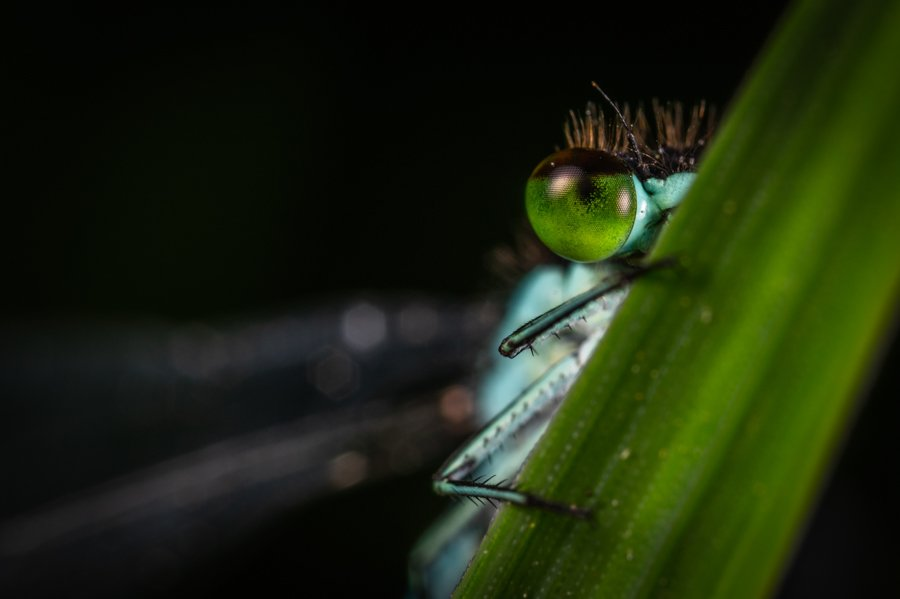
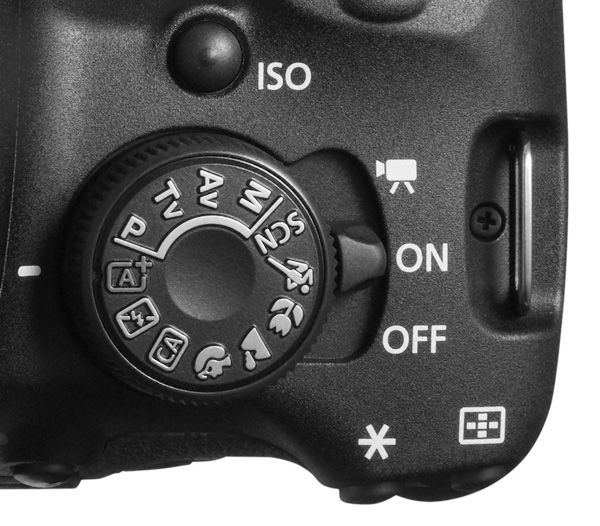
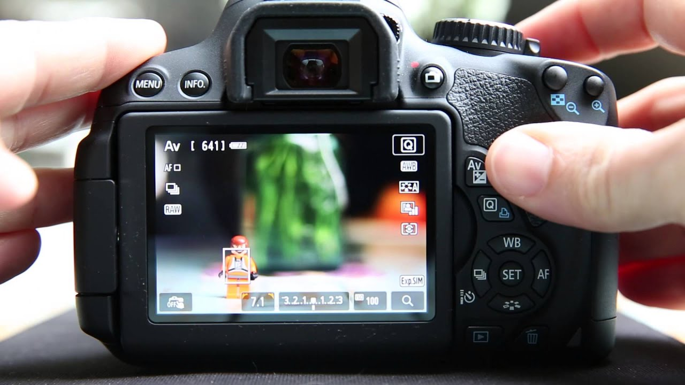
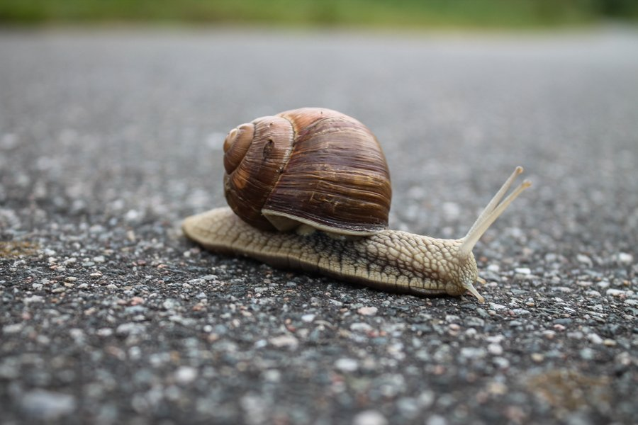
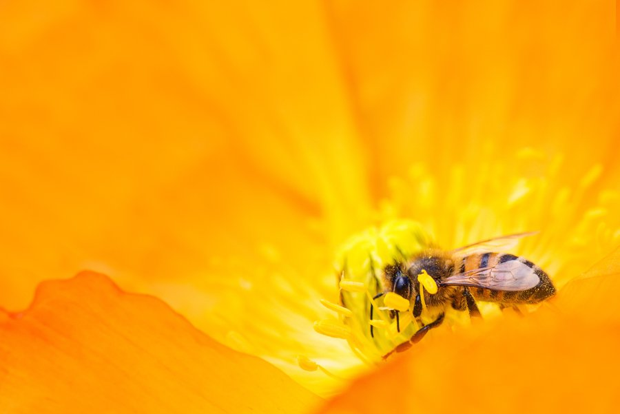

31 Oct 2019
Author : Nathachai
สำหรับวันนี้เราจะมาพูดคุยกันในส่วนของการถ่าย Macro กันครับ เชื่อว่ามีเพื่อนๆอีกไม่น้อย ไม่ว่าจะเป็นมือใหม่ / มือเก่า ต่างอยากเริ่มการถ่าย Macro กันบ้าง ซึ่ง การถ่าย Macro คือ การถ่าย Subject ที่มีขนาดเล็กกว่าปกติ เล็กจนตาเราไม่อาจมองเห็น Detail ต่างๆได้ชัดเจน รวมถึงเลนส์ที่ใช้ ก็ต้องมีความสามารถในการ Closeup ในระยะประชิดได้มาก และ มีกำลังขยายที่สูงด้วยครับ ซึ่งนอกเหนือจากอุปกรณ์แล้วการ Setting ต่างๆ ก็มีผลโดยตรงในการถ่าย Macro เช่นกันครับ
เทคนิคเบื้องต้นของการถ่าย Macro ที่ควรรู้ มีอยู่มากมายและไม่สามารถแนะนำได้ทั้งหมด จึงสรุปสั้นไว้ 5 หัวข้อ ดังนี้
โดยปกติในการถ่ายภาพทั่วๆไปแล้ว เชื่อว่าเพื่อนๆคงเลือกรุปแบบการ Focus เป็น Auto อย่างแน่นอน ไม่ว่าจะเป็น AF-S , AF-C หรือ DMF เป็นต้น เนื่องจากเป็นค่า Default เดิมๆที่ถูกตั้งค่ามาจากโรงงานแล้วนั่นเอง แต่กับการถ่าย Macro นั้น การจะใช้ AF-S , AF-C หรือ DMF อาจจะไม่สะดวกเท่าไรนัก เพราะ Subject ที่เราถ่ายนั้น มีขนาดที่เล็กกว่าปกติ ทำให้บางครั้งตัวกล้องไม่สามารถหาจุด Focus ได้นั่นเองครับ จึงหลีกเลี่ยงไม่ได้ที่จะต้องเปลี่ยนมาใช้ Manual Focus ครับ ซึ่ง Manual Focus จะช่วยเราได้เป็นอย่างดีกับการ Focus Subject ที่ต้องการความละเอียดรอบคอบสูงอย่างการถ่าย Macro ฉะนั้นเพื่อนๆที่คิดว่าจะจริงจังกับการถ่าย Macro ด้วยแล้วนั้น ต้องหมั่นฝึกใช้ Manual Focus ไว้ด้วยนะครับ
นอกเหนือจากการใช้ Manual Focus ให้ถนัดและคล่องแล้วนั้น เราต้องเข้าใจในการใช้ Mode สำหรับการถ่าย Macro ด้วยนะครับ ซึ่งเราจะให้ความสำคัญกับ Mode M หรือ Mode A กันครับ โดย Mode A เดิมๆเชื่อว่าเพื่อนๆคงใช้สำหรับการถ่าย Portrait กันเป็นหลัก เพราะ สามารถปรับค่า F ได้ตามใจหวัง โดยค่าอื่นๆอย่าง Speed Shutter ตัวกล้องจะเป็นผู้คำนวณให้เราเสร็จสรรพครับ หรือ จะเป็น Mode M ก็ตรงตามชื่อเลยครับ M นั้นย่อมาจาก Manual เท่ากับว่า ตัวกล้องจะปล่อยอิสระให้กับเราในการ Setting ค่าต่างๆ ไม่ว่า Aperture , Speed Shutter , ISO เป็นต้น เพื่อให้ได้ผลลัพธ์ตามที่เราคาดหวังไว้ ทั้งนี้ Mode M แม้ว่าอาจจะเหมาะกับการถ่าย Macro แต่เพื่อนๆก็ต้องทำความเข้าใจความสัมพันธ์ของค่าทั้ง 3 อย่าง Aperture , Speed Shutter , ISO ด้วยนะครับ เพราะ ทั้ง 3 ค่านี้ ถือว่าเป็นหวใจสำคัญของผลลัพธ์ที่จะได้ใน Mode M ครับ
ทั้งกล้อง Mirrorless และ กล้อง DSLR ในปัจจุบัน ต่างก็มีช่องมองไม่ว่าจะเป็น EVF / OVF เพื่อช่วยในการถ่าย และ มองผลลัพธ์ในสภาพที่แสงจัดได้เป็นอย่างดีครับ แต่กระนั้นการมอง EVF / OVF สำหรับการถ่าย Macro อาจจะไม่ใช่เรื่องที่ดีที่สุดครับ อย่างที่บอกไปเบื้องต้นว่าการถ่าย Macro Subject หลักของเรามีขนาดที่เล็กกว่า SUbject ทั่วๆไป ครั้นจะมองผ่าน EVF / OVF นานๆ คงจะไม่ใช่เรื่องดีแน่นอนครับ ทางแก้ง่าย คือ เปิด Liveview ในการถ่าย Macro ครับ ซึ่งข้อดีของการใช้ Liveview ในการถ่าย Macro นั้น คือ เราสามารถพิจารณาในส่วนของรายละเอียดต่างๆได้เต็มตากว่าการมองผ่าน EVF / OVF นั่นเองครับ ทำให้การเล็งโดยเฉพาะ Focus นั้น ทำได้สะดวก รวดเร็วยิ่งขึ้น และ แม่นยำยิ่งขึ้น ซึ่งการใช้ Liveview พร้อมกับการใช้ Manual Focus ในปัจจุบันจะมี Feature อย่าง Focus Peaking ที่มาเสริมการทำงานได้อย่างสะดวกยิ่งขึ้นครับ
การถ่าย Macro นอกเหนือจะใช้ความพิถีพิถันในการถ่ายที่สูงแล้ว ยังต้องทีความอดทนสูงด้วยเช่นกันครับ หากเป็นการถ่าย Macro ที่เป็นสิ่งของเล็กๆ ที่ไม่มีการเคลื่อนไหวใดๆ ก็อาจจะยังแก้ไขด้วยการถ่ายซ่อมใหม่ได้ง่ายๆ แต่ส่วนใหญ่การถ่าย Macro เราๆจะนึกถึงการถ่ายแมลงซะส่วนใหญ่ ซึ่งเจ้าแมลงเหล่านี้น้อยตัวทีจะยอมหยุดนิ่งอยู่กับที่ให้เราได้ถ่ายอย่างปกติ และ น้อยครั้งที่กดชัตเตอร์เพียงครั้งเดียวแล้วเราจะได้ภาพ Macro ตามที่เราหวังไว้ครับ ฉะนั้นทางทีเดียวในการถ่าย Macro หากเป็นไปได้ควรตั้งถ่ายแบบ Burst Shooting หรือ ถ่ายต่อเนืองไว้ด้วยนะครับ เพราะ การเคลื่อนไหวเพียงเสี้ยววินาที ก็มีผลต่อการคลาดเคลื่อนของตำแหน่งจุด Focus ด้วยครับ
มาถึงแนวทางการถ่าย Macro เบื้องต้นในข้อสุดท้ายกันแล้วครับ จากการตั้งค่าที่ถูกต้อง , เลือกระบบ Focus ตามสถานการณ์ , ตั้งถ่าย Burst Shooting แล้ว แต่เพื่อนๆทราบหรือไม่ การถ่ายต่อเนื่อง ทุกๆครั้งที่ตัวกล้องมีการสับม่านชัตเตอร์ลงมา ตัวกล้องจะมีอาการสั่นไหวเล็กน้อย อันมาจากกลไกการทำงานนั่นเองครับ หรือ ในสถานการณ์ที่เราถ่าย Macro โดยใช้ขาตั้งกล้อง แม้ขาตั้งกล้องจะนิ่งเพียงใด แค่เพียงเรากดปุ่ม Shutter เพื่อลั่นชัตเตอร์ ตัวกล้องก็พร้อมสั่นสะเทือนเช่นกันครับ ซึ่งทริคเล็กๆสำหรับการแก้ปัญหา คือ ลองตั้งหน่วงเวลาก่อนการถ่ายภาพ ซึ่งปกติในตัวกล้องจะมีให้เลือกตั้งค่าไว้ อาจจะมี 2 วิ. / 5 วิ. หรือ 10 วิ. ตามแต่ที่ตัวกล้องจะสามารถกำหนดได้ครับ